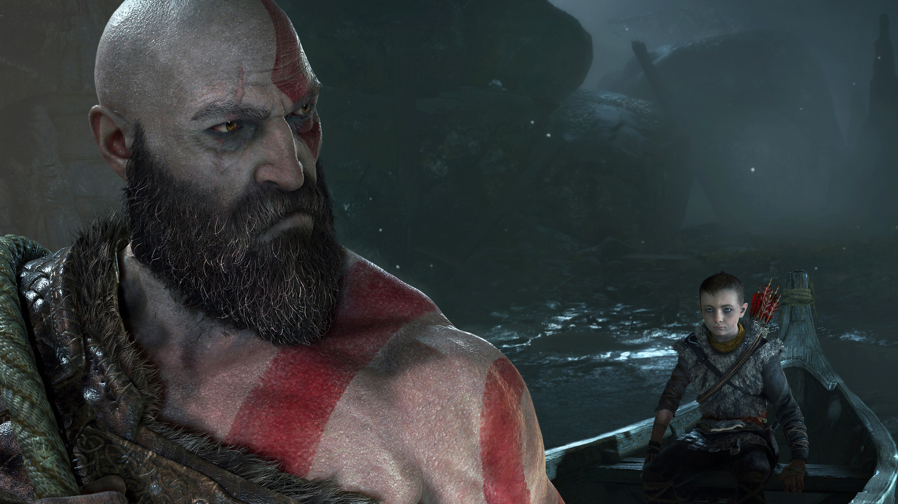

Review of God of War
This game is another reason PS4 is winning the console race. It really is one of those games that can make or break a decision along with the other pantheon of games already at Playstation's disposal. With a thrilling story, satisfying gameplay, and a more raw/emotional look at the killing machine that is Kratos, This is another game every story seeker must play. There is even something for the hardcore types who seek a bonecrushing challange.
The Premise
God of War is set in the Norse realm without any explination as to how Kratos arrived there. Kratos' wife dies and he is forced to raise his son and take him to the top of the highest mountain in all the realms. Kratos' son, Atreus, is a new character in the lore of God of War and delivers a much tougher challenge that punching people to death: how to raise a kid.
The Story
Without spoilers, the story is great. We follow Kratos and Atreus on their trek through the Nine Realms and encounter many challenges and monsters. The deeper dive into Kratos' mental state is also something that has not really been explored. This game we see him more exposed and vunerable than ever and it makes for extremely juicy plots that make your skin burst with goosebumps. The main villain in the game is very interesting and creates a new dynamic with how the Ghost of Sparta fights his enemies. With fun and dynamic characters, awesome moments, and general high points, this is a must play for everyone.
The Gameplay
When it comes to gameplay, not too many games top the fun this game allows for. Your swings of an axe feel like they have some proper weight to them. The abilities are fun and super badass, the animators really outdid themselves. Activating certain abilities make you feel like a true God and someone who is truly POWERFUL. When it comes to enemy types there are quite a few but some bosses are recycled. This game isn't afraid to crowd up the level to ramp up the difficulty, making some areas of the game feel very difficul and intense. Overall there is plenty of enemy types and the Valkaries offer something truly diabolical for those willing to die again and again. As for the challenging aspects of this game, Give Me God of War mode is one of the hardest things I have ever done. The enemies are truly overpowered and you must be a master of the game mechanics to be able to even pass levels, which some require perfect timing and gameplay to come out alive in. On this mode the bosses feel like fellow gods as they can two hit you to death. It is truly a controller destroying mode and is not recommended but for the coldest and most violent of hearts. Overall the gameplay puts you in control of a god and every second is spent hacking and slashing through baddies.
The Conclusion
As far as PS4 games go, not too many top this. This is another must have for any gamer and MUST be played at least for the story. For those seeking a ride to absolute hell and a story, Give Me God of War mode provides. Overall I give it a 9.5 out of 10 for everything that it offers.